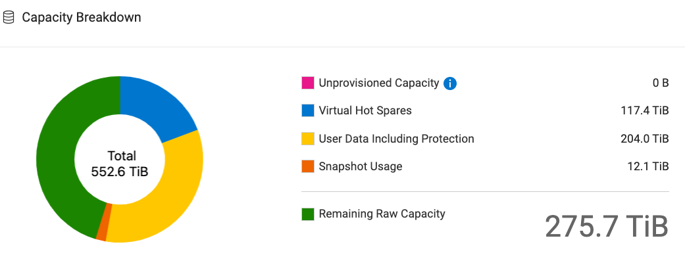
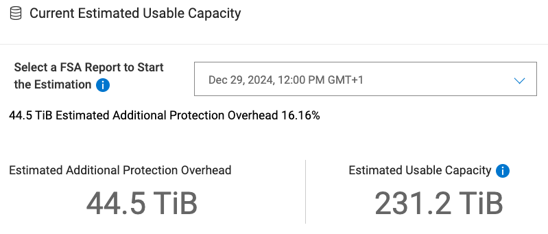
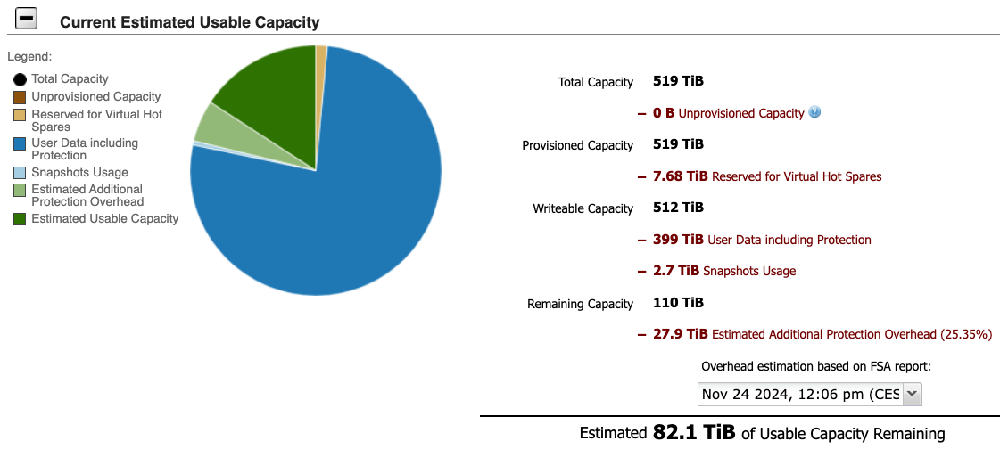

1 Background
GDx at OUSAMG is planning to upscale the WGS production to 192 samples (4 x 48 or 2 x 48 + 1 x 96) samples per week. Do we have enough capacity in IT and bioinformatics pipelines for this upscaling?
The capacity of IT & bioinformatics pipelines can be evaluated from following three aspects:
- Data transfer speed
- Data storage
- Pipeline capacity
This document will focus on the evaluation of NSC storage capacity.
2 Boston capacity breakdown
Total capacity of boston is 552.6 TiB.
As of Dec 29, 2024, 12:00 PM
The capability breakdown as of Dec 29, 2024 12:00 PM is as follows:

3 Boston usable capacity
As of Dec 29, 2024, 12:00 PM
The usable capacity as of Dec 29, 2024, 12:00 PM is 231.2 TiB.

4 Boston storage volumes
| Name | Purpose |
|---|---|
| /boston | General data area |
| /boston/runScrach | Sequencing runs (Illumina, ONT) |
| /boston/projects | Research projects |
| /boston/common | Software, and repositories |
| /boston/diag | Diagnostics production |
| /boston/diag/transfer | Transfer area (for TSD) |
| /boston/runScratch/demultiplexed/delivery/tsd_sleipnir | Transfer area NSC |
| vm-datastore | VMware datastore (virtual hard disks) |
5 Boston used storage breakdown
As of Dec 29, 2024, 12:00 PM:
The used storage as of Dec 29, 2024, 12:00 PM is 228 TiB. Details are as follows:
Tip
The size of boston/diag/production/data/samples folder is very small (924 GiB) for 255 sample sub-folders in it due to the big files (mostly *.fastq.ora files) are hardlinks.
6 Miami (old boston) capacity breakdown
Total capacity of miami storage is 519 TiB.
As of Nov 24, 2024, 12:06 PM
The capability breakdown as of Nov 24, 2024 12:06 PM is as follows:

7 Miami (old boston) used storage breakdown
As of Nov 24, 2024, 12:06 PM:
The used storage as of Nov 24, 204, 12:06 PM is 385 TiB. Details are as follows:
Warning diag
Even after the routine diagnostics production cleanup, diag still uses a large volume storage.
The following folders take ~80 TiB in total, which can be considered for cleanup:
| Folder | Size |
|---|---|
/miami/diag/diagInternal/ying_temp |
24.0 TiB |
/miami/diag/runs/veriseq |
13.2 TiB |
/miami/diag/staging/data |
12.5 TiB |
/miami/diag/transfer/dev/p22-yingsh |
11.3 TiB |
/miami/diag/transfer/lost-and-found |
9.6 TiB |
/miami/diag/diagInternal/verification |
4.1 TiB |
/miami/diag/staging/transfer |
4.0 TiB |
Warning NSC
The /miami/projects folder takes 104 TiB.
The /miami/runScratch/analysis/projects folder takes 55 TiB.
8 Boston used storage table
8.1 /boston (228 TiB)
| Directory | Logical | %use of Parent Directory | Physical |
|---|---|---|---|
| /boston/diag | 96.9 TiB | 51.8% | 113 TiB |
| /boston/runScrach | 83.1 TiB | 44.4% | 107 TiB |
| /boston/projects | 2.87 TiB | 1.5% | 3.74 TiB |
| /boston/home | 2.77 TiB | 1.5% | 2.82 TiB |
| /boston/common | 1.42 TiB | 0.8% | 1.54 TiB |
8.1.1 /boston/diag
| Directory | Logical | %use of Parent Directory | Physical |
|---|---|---|---|
| /boston/diag/runs | 35.8 TiB | 37.0% | 47.4 TiB |
| /boston/diag/production | 33.8 TiB | 34.9% | 34.3 TiB |
| /boston/diag/transfer | 15.6 TiB | 16.1% | 16.3 TiB |
| /boston/diag/nscDelivery | 7.82 TiB | 8.1% | 10.4 TiB |
| /boston/diag/staging | 3.84 TiB | 4.0% | 4.88 TiB |
| /boston/diag/diagInternal | 1.48 GiB | 0.0% | 1.88 GiB |
8.1.1.1 /boston/diag/production
| Directory | Logical | %use of Parent Directory | Physical |
|---|---|---|---|
| /boston/diag/production/data | 33.5 TiB | 99.1% | 33.9 TiB |
| /boston/diag/production/sw | 238 GiB | 0.7% | 297 GiB |
| /boston/diag/production/reference | 74.3 GiB | 0.2% | 63.9 GiB |
| /boston/diag/production/logs | 3.32 GiB | 0.0% | 557 MiB |
| /boston/diag/production/.thirdparty | 110 MiB | 0.0% | 148 GiB |
8.1.1.2 /boston/diag/transfer
| Directory | Logical | %use of Parent Directory | Physical |
|---|---|---|---|
| /boston/diag/transfer/production | 14.8 TiB | 97.7% | 15.4 TiB |
8.1.1.3 /boston/diag/staging
| Directory | Logical | %use of Parent Directory | Physical |
|---|---|---|---|
| /boston/diag/staging/data | 3.53 TiB | 92.0% | 4.54 TiB |
| /boston/diag/staging/sw | 237 GiB | 6.0% | 285 GiB |
| /boston/diag/staging/reference | 77.5 GiB | 2.0% | 67.5 GiB |
8.1.2 /boston/runScratch
| Directory | Logical | %use of Parent Directory | Physical |
|---|---|---|---|
| /boston/runScratch/NovaSeqX | 34.5 TiB | 41.5% | 45.7 TiB |
| /boston/runScratch/analysis | 38.8 TiB | 37.0% | 37.1 TiB |
| /boston/runScratch/demultiplexed | 15.6 TiB | 18.8% | 20.7 TiB |
| /boston/runScratch/processed | 1.03 TiB | 1.2% | 1.58 TiB |
| /boston/runScratch/ONT | 738 GiB | 0.9% | 1.02 TiB |
| /boston/runScratch/UserData | 244 GiB | 0.3% | 254 GiB |
| /boston/runScratch/test | 64.7 GiB | 0.1% | 86.1 GiB |
| /boston/runScratch/PGT | 16.7 GiB | 0.0% | 20.5 GiB |
| /boston/runScratch/Upgrade_software | 16.7 GiB | 0.0% | 22.2 GiB |
| /boston/runScratch/mik_data | 12.5 GiB | 0.0% | 12.5 GiB |
| /boston/runScratch/imm_data | 4.5 GiB | 0.0% | 4.53 GiB |
9 Expected data
The data generated by NovaSeqX depend on the settings of secondary analysis and the sequencing depth (current setting is 64 samples per flowcell).
When use Onboard DRAGEN only for demultiplexing, inhouse pipelines must be run on external DRAGEN.
9.1 Per sample estimation
9.1.1 BCL Convert only
9.1.1.1 NovaSeqX generated sequencing data
The {R1,R2}.fastq.ora files per sample is about 14 GB logical data (18 GB on disk).
Other files such as BCL files, images, logs, reports, etc. is about 47 GB logical data per sample (63 GB on disk).
Subtotal
In total, 61 GB logical data per sample (81 GB on disk).
9.1.1.2 Inhouse pipelines on external DRAGEN
With BCL Convert only, we need to run inhouse pipelines on external DRAGEN which requires input data and also generates output data.
Given the design of the inhouse pipelines, some files are duplicated in different locations.
Only 1 copy of any fastq.ora file is physically stored on boston, i.e., not duplicated. A fastq.ora file appears in 4 different locations:
/boston/diag/nscDelivery/boston/diag/transfer/production/{normal,high,urgent}/samplesor/boston/daig/transfer/production/transferred/{normal,high,urgent}/samples/boston/diag/production/data/samples/boston/diag/production/data/analyses-work/\*/result/\*/work
1, 2 and 3 are hardlinks; 4 is symlink of 3 (within
/boston/diag/produciton/data/analyses-work, files are symlinked from the Nextflow work folder.)Files in
/boston/diag/produciton/data/analyses-results/{singles,trios}are copies of that in/boston/diag/produciton/data/analyses-workFiles in
/boston/diag/transfer/production/{normal,high,urgent}/analyses-results/{singles,trios}are copies of that in/boston/diag/produciton/data/analyses-work
9.1.1.2.1 analyses-work folder size
Subtotal
Average analyses-work basepipe folder size is 71 GiB (70 GiB on disk)
Average analyses-work triopipe folder size is 11 GiB (7 GiB on disk)
Average analyses-work annopipe folder size is 9 GiB (9 GiB on disk)
Adding NovaSeqX generated sequencing data, the total data per sample is 140 GiB (158 GiB on disk).
9.1.1.2.2 analyses-results folder size
Subtotal
Average analyses-results singles folder size is 55 GiB (55 GiB on disk).
Average analyses-results trios folder size is 3 GiB (3 GiB on disk).
Adding NovaSeqX generated sequencing data and analyses-work data and counting in the 2 duplicates of analyses-results, the total data per sample becomes 251 GiB (269 GiB on disk).
9.1.1.2.3 ella-incoming folder size
Total
Average ella-incoming folder size is 126 MB (127 MB on disk).
Adding NovaSeqX generated sequencing data, analyses-work data and analyses-results data, the total data per sample becomes 251 GiB (269 GiB on disk).
9.1.1.3 Number of samples (BCL Convert only)
9.1.2 DRAGEN Germline (AllVariantCallers)
When secondary analysis is DRAGEN Germline with all variant callers, i.e. doing both demultiplexing and variant calling with Onboard DRAGEN.
In addition to NovaSeqX generated sequencing data, each sample has about 20 GB pipeline output logical data (27 GB on disk). See Section 9.1.2.1 for pipeline output files and their sizes per sample.
Total
In total, 81 GB logical data per sample (108 GB on disk).
The inhouse pipeline and nsc-exporter changes to accommodate the DRAGEN Germline pipeline is not yet implemented. Some duplication of NovaSeqX generated data is expected.
9.1.2.1 Pipeline output files per sample
analysis/wgs435_HB12345678_b08a0667-b221-48c6-8d44-abb516a61a2b/germline_seq
├── [ 20G] germline_seq
│ ├── [ 2.6M] report.html
│ ├── [ 13M] sv
│ │ ├── [ 6.1M] results
│ │ │ ├── [ 44K] stats
│ │ │ │ ├── [ 736] alignmentStatsSummary.txt
│ │ │ │ ├── [ 20K] candidate_metrics.csv
│ │ │ │ ├── [ 535] diploidSV.sv_metrics.csv
│ │ │ │ ├── [ 4.4K] graph_metrics.csv
│ │ │ │ ├── [ 9.0K] svCandidateGenerationStats.tsv
│ │ │ │ ├── [ 6.7K] svCandidateGenerationStats.xml
│ │ │ │ └── [ 1.7K] svLocusGraphStats.tsv
│ │ │ └── [ 6.1M] variants
│ │ │ ├── [ 4.2M] candidateSV.vcf.gz
│ │ │ ├── [ 671K] candidateSV.vcf.gz.tbi
│ │ │ ├── [ 1.1M] diploidSV.vcf.gz
│ │ │ └── [ 121K] diploidSV.vcf.gz.tbi
│ │ └── [ 6.5M] workspace
│ │ ├── [ 56K] alignmentStats.xml
│ │ ├── [ 505] chromDepth.txt
│ │ ├── [ 59K] edgeRuntimeLog.txt
│ │ ├── [ 17K] genomeSegmentScanDebugInfo.txt
│ │ ├── [ 2.3K] logs
│ │ │ └── [ 2.2K] config_log.txt
│ │ └── [ 6.4M] svLocusGraph.bin
│ ├── [ 182K] wgs435_HB12345678_3c52f4e7-826d-40dd-bd98-f4356deeb098.cnv.excluded_intervals.bed.gz
│ ├── [ 457K] wgs435_HB12345678_3c52f4e7-826d-40dd-bd98-f4356deeb098.cnv.gff3
│ ├── [ 2.8K] wgs435_HB12345678_3c52f4e7-826d-40dd-bd98-f4356deeb098.cnv.igv_session.xml
│ ├── [ 793] wgs435_HB12345678_3c52f4e7-826d-40dd-bd98-f4356deeb098.cnv_metrics.csv
│ ├── [ 70K] wgs435_HB12345678_3c52f4e7-826d-40dd-bd98-f4356deeb098.cnv.vcf.gz
│ ├── [ 32] wgs435_HB12345678_3c52f4e7-826d-40dd-bd98-f4356deeb098.cnv.vcf.gz.md5sum
│ ├── [ 18K] wgs435_HB12345678_3c52f4e7-826d-40dd-bd98-f4356deeb098.cnv.vcf.gz.tbi
│ ├── [ 16G] wgs435_HB12345678_3c52f4e7-826d-40dd-bd98-f4356deeb098.cram
│ ├── [ 1.3M] wgs435_HB12345678_3c52f4e7-826d-40dd-bd98-f4356deeb098.cram.crai
│ ├── [ 32] wgs435_HB12345678_3c52f4e7-826d-40dd-bd98-f4356deeb098.cram.md5sum
│ ├── [ 302] wgs435_HB12345678_3c52f4e7-826d-40dd-bd98-f4356deeb098.cyp2b6.tsv
│ ├── [ 283] wgs435_HB12345678_3c52f4e7-826d-40dd-bd98-f4356deeb098.cyp2d6.tsv
│ ├── [ 420K] wgs435_HB12345678_3c52f4e7-826d-40dd-bd98-f4356deeb098.fastqc_metrics.csv
│ ├── [ 272K] wgs435_HB12345678_3c52f4e7-826d-40dd-bd98-f4356deeb098.fragment_length_hist.csv
│ ├── [ 185] wgs435_HB12345678_3c52f4e7-826d-40dd-bd98-f4356deeb098.gba.tsv
│ ├── [ 2.4K] wgs435_HB12345678_3c52f4e7-826d-40dd-bd98-f4356deeb098.gvcf_hethom_ratio_metrics.csv
│ ├── [ 2.4K] wgs435_HB12345678_3c52f4e7-826d-40dd-bd98-f4356deeb098.gvcf_metrics.csv
│ ├── [ 46M] wgs435_HB12345678_3c52f4e7-826d-40dd-bd98-f4356deeb098.hard-filtered.baf.bw
│ ├── [ 3.8G] wgs435_HB12345678_3c52f4e7-826d-40dd-bd98-f4356deeb098.hard-filtered.gvcf.gz
│ ├── [ 32] wgs435_HB12345678_3c52f4e7-826d-40dd-bd98-f4356deeb098.hard-filtered.gvcf.gz.md5sum
│ ├── [ 1.2M] wgs435_HB12345678_3c52f4e7-826d-40dd-bd98-f4356deeb098.hard-filtered.gvcf.gz.tbi
│ ├── [ 365M] wgs435_HB12345678_3c52f4e7-826d-40dd-bd98-f4356deeb098.hard-filtered.vcf.gz
│ ├── [ 32] wgs435_HB12345678_3c52f4e7-826d-40dd-bd98-f4356deeb098.hard-filtered.vcf.gz.md5sum
│ ├── [ 1.6M] wgs435_HB12345678_3c52f4e7-826d-40dd-bd98-f4356deeb098.hard-filtered.vcf.gz.tbi
│ ├── [ 16M] wgs435_HB12345678_3c52f4e7-826d-40dd-bd98-f4356deeb098.improper.pairs.bw
│ ├── [ 429] wgs435_HB12345678_3c52f4e7-826d-40dd-bd98-f4356deeb098.insert-stats.tab
│ ├── [ 8.9K] wgs435_HB12345678_3c52f4e7-826d-40dd-bd98-f4356deeb098.mapping_metrics.csv
│ ├── [ 9.2K] wgs435_HB12345678_3c52f4e7-826d-40dd-bd98-f4356deeb098.metrics.json
│ ├── [ 39K] wgs435_HB12345678_3c52f4e7-826d-40dd-bd98-f4356deeb098.pcr-model-0.log
│ ├── [ 115] wgs435_HB12345678_3c52f4e7-826d-40dd-bd98-f4356deeb098.pcr-model.log
│ ├── [ 1.4K] wgs435_HB12345678_3c52f4e7-826d-40dd-bd98-f4356deeb098.ploidy_estimation_metrics.csv
│ ├── [ 1.8K] wgs435_HB12345678_3c52f4e7-826d-40dd-bd98-f4356deeb098.ploidy.vcf.gz
│ ├── [ 32] wgs435_HB12345678_3c52f4e7-826d-40dd-bd98-f4356deeb098.ploidy.vcf.gz.md5sum
│ ├── [ 4.0K] wgs435_HB12345678_3c52f4e7-826d-40dd-bd98-f4356deeb098.ploidy.vcf.gz.tbi
│ ├── [ 1.9M] wgs435_HB12345678_3c52f4e7-826d-40dd-bd98-f4356deeb098.repeats.bam
│ ├── [ 4.3K] wgs435_HB12345678_3c52f4e7-826d-40dd-bd98-f4356deeb098.repeats.vcf.gz
│ ├── [ 3.9K] wgs435_HB12345678_3c52f4e7-826d-40dd-bd98-f4356deeb098.repeats.vcf.gz.tbi
│ ├── [ 48K] wgs435_HB12345678_3c52f4e7-826d-40dd-bd98-f4356deeb098.roh.bed
│ ├── [ 114] wgs435_HB12345678_3c52f4e7-826d-40dd-bd98-f4356deeb098.roh_metrics.csv
│ ├── [ 242K] wgs435_HB12345678_3c52f4e7-826d-40dd-bd98-f4356deeb098.seg
│ ├── [ 69K] wgs435_HB12345678_3c52f4e7-826d-40dd-bd98-f4356deeb098.seg.bw
│ ├── [ 247K] wgs435_HB12345678_3c52f4e7-826d-40dd-bd98-f4356deeb098.seg.called
│ ├── [ 259K] wgs435_HB12345678_3c52f4e7-826d-40dd-bd98-f4356deeb098.seg.called.merged
│ ├── [ 223] wgs435_HB12345678_3c52f4e7-826d-40dd-bd98-f4356deeb098.smn.tsv
│ ├── [ 1.7K] wgs435_HB12345678_3c52f4e7-826d-40dd-bd98-f4356deeb098.snperror-sampler.log
│ ├── [ 535] wgs435_HB12345678_3c52f4e7-826d-40dd-bd98-f4356deeb098.sv_metrics.csv
│ ├── [ 1.1M] wgs435_HB12345678_3c52f4e7-826d-40dd-bd98-f4356deeb098.sv.vcf.gz
│ ├── [ 121K] wgs435_HB12345678_3c52f4e7-826d-40dd-bd98-f4356deeb098.sv.vcf.gz.tbi
│ ├── [ 19M] wgs435_HB12345678_3c52f4e7-826d-40dd-bd98-f4356deeb098.target.counts.bw
│ ├── [ 22M] wgs435_HB12345678_3c52f4e7-826d-40dd-bd98-f4356deeb098.target.counts.diploid.bw
│ ├── [ 31M] wgs435_HB12345678_3c52f4e7-826d-40dd-bd98-f4356deeb098.target.counts.gc-corrected.gz
│ ├── [ 25M] wgs435_HB12345678_3c52f4e7-826d-40dd-bd98-f4356deeb098.target.counts.gz
│ ├── [ 1.4K] wgs435_HB12345678_3c52f4e7-826d-40dd-bd98-f4356deeb098.targeted.json
│ ├── [ 22M] wgs435_HB12345678_3c52f4e7-826d-40dd-bd98-f4356deeb098.tn.bw
│ ├── [ 37M] wgs435_HB12345678_3c52f4e7-826d-40dd-bd98-f4356deeb098.tn.tsv.gz
│ ├── [ 1.4K] wgs435_HB12345678_3c52f4e7-826d-40dd-bd98-f4356deeb098.trimmer_metrics.csv
│ ├── [ 7.2K] wgs435_HB12345678_3c52f4e7-826d-40dd-bd98-f4356deeb098.vc_hethom_ratio_metrics.csv
│ ├── [ 2.4K] wgs435_HB12345678_3c52f4e7-826d-40dd-bd98-f4356deeb098.vc_metrics.csv
│ ├── [ 2.8K] wgs435_HB12345678_3c52f4e7-826d-40dd-bd98-f4356deeb098.wgs_contig_mean_cov.csv
│ ├── [ 2.1K] wgs435_HB12345678_3c52f4e7-826d-40dd-bd98-f4356deeb098.wgs_coverage_metrics.csv
│ ├── [ 16K] wgs435_HB12345678_3c52f4e7-826d-40dd-bd98-f4356deeb098.wgs_fine_hist.csv
│ ├── [ 558] wgs435_HB12345678_3c52f4e7-826d-40dd-bd98-f4356deeb098.wgs_hist.csv
│ └── [ 43] wgs435_HB12345678_3c52f4e7-826d-40dd-bd98-f4356deeb098.wgs_overall_mean_cov.csv
└── [ 11K] logs
├── [ 258] bcl2fastq.dragen_events.csv
├── [ 1.1K] cmdline_1198902.txt
├── [ 608] cmdline_1608030.txt
├── [ 1.1K] cmdline_3358454.txt
├── [ 219] DCKR_RG-stderr_1608030.txt
├── [ 461] DCKR_RG-stdout_1608030.txt
├── [ 250] ora.dragen_events.csv
├── [ 1] ORA-stderr_1198902.txt
├── [ 3.9K] ORA-stdout_1198902.txt
├── [ 1] P2FSW-stderr_3358454.txt
└── [ 2.4K] P2FSW-stdout_3358454.txt
Tip
👆 Generated by tree --du which shows the actual file sizes instead of disk space used.
9.1.2.2 Number of samples (DRGEN Germline)
9.2 Per sequencing run
Each sequencing run can have different set up.
- Flowcell side:
- single side (single flowcell)
- both sides (dual flowcell)
- Flowcell type:
- 1.5B
- 10B
- 25B
- Secondary analysis:
- BCL Convert
- DRAGEN Germline
- variant calling mode = None
- variant calling mode = SmallVariantCaller
- variant calling mode = AllVariantCallers (Small, Structural, CNV, Repeat Expansions, ROH, CYP2D6 etc.)
We normally run a single or dual 25B flowcell with BCL Convert only or DRAGEN Germline with all variant callers enabled.
9.2.1 Single 25B flowcell; BCL Convert only
Single 25B flowcell (64 samples), secondary analysis is BCL Convert, i.e. only demultiplexing.
Total
3.9 TB logical data (5.1 TB on disk).
9.2.2 Dual 25B flowcell; BCL Convert only
Dual 25B flowcell (128 samples), secondary analysis is BCL Convert, i.e. only demultiplexing.
Total
7.8 TB logical data (10.2 TB on disk).
9.2.3 Dual 25B flowcell; DRAGEN Germline (AllVariantCallers)
Dual 25B flowcell (128 samples), secondary analysis is DRAGEN Germline with all variant callers enabled, i.e. doing both demultiplexing and mapping, variant calling with Onboard DRAGEN.
Total
10.5 TB logical data (14.0 TB on disk).